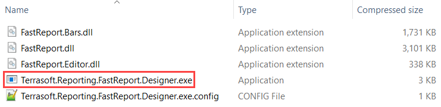
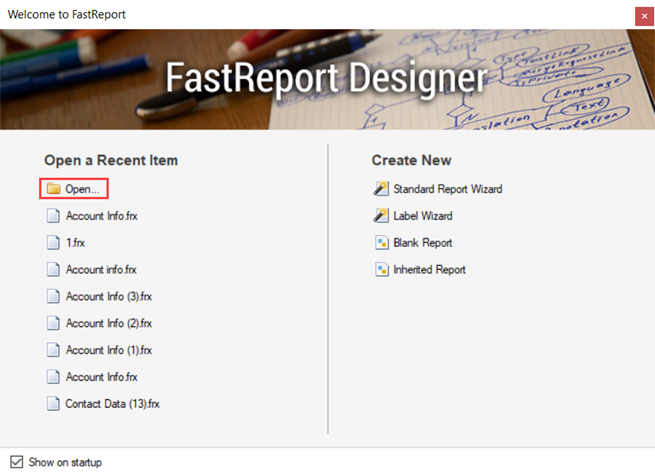
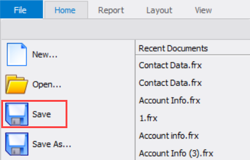
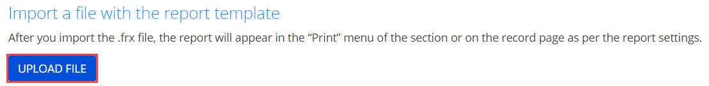

1. Создать отчет
- Перейдите в дизайнер системы по кнопке
 . В блоке Настройка системы (System setup) перейдите по ссылке Настройка отчетов (Report setup).
. В блоке Настройка системы (System setup) перейдите по ссылке Настройка отчетов (Report setup). -
Выполните действие Добавить отчет —>FastReport (New report —>FastReport).

-
На панели свойств заполните свойства отчета:
- Название отчета (Report title) — "Информация контакта" ("Contact Data").
- Раздел (Section) — выберите "Контакты" ("Contacts").
- Установите признак Отображать в разделе (Show in the section list view).
- Установите признак Отображать на странице записи (Show in the section record page).
- Установите признак Отображать в аналитике раздела (Show in the section analytics view).
- Страница фильтрации (Filter page) — выберите "SimpleReportFilterPage".
2. Указать источники данных
-
В блоке Укажите источники данных для отчета (Specify data sources for the report) рабочей области страницы настройки отчета укажите источники данных.
Данные, которые необходимо указать:
- Перечень объектов.
- Колонки объектов.
- Связи колонок объектов, которые используются для получения данных.
- Локализуемые строки (опционально).
Исходный код источника данных ContactDataProvider приведен ниже.
ProviderName — класс провайдера данных.
DataValueType — типы данных соответствующих колонок. 1 — тип данных TEXT. Перечисление Terrasoft.core.enums.DataValueType описано в Библиотеке .NET классов.
LocalizableStrings — локализуемые строки.
- На панели инструментов страницы настройки отчета нажмите Применить (Apply).
3. Реализовать провайдер данных отчета
- Перейдите в раздел Конфигурация (Configuration) и выберите пользовательский пакет, в который будет добавлена схема.
-
На панели инструментов реестра раздела нажмите Добавить —> Исходный код (Add —> Source code).

-
В дизайнере исходного кода заполните свойства схемы:
- Код (Code) — "UsrContactDataSourceCode".
- Заголовок (Title) — "Информация контакта" ("Contact Data").
Для применения изменений свойств нажмите Применить (Apply).
-
Добавьте локализуемую строку, которая содержит заголовок отчета.
- В контекстном меню узла Локализуемые строки (Localizable strings) нажмите кнопку
/scr_add_button.png) .
. -
Заполните свойства локализуемой строки:
- Код (Code) — "ReportTitle".
- Значение (Value) — "Информация контакта" ("Contact Data").
- Для добавления локализуемой строки нажмите Добавить (Add).
- В контекстном меню узла Локализуемые строки (Localizable strings) нажмите кнопку
-
Аналогично добавьте локализуемые строки, которые соответствуют полям отчета.
Значения локализуемых строк, которые необходимо добавить, приведены в таблице ниже.
Значения локализуемых строкКод
(Code)Значение
(Value)"FullNameLabel" "ФИО" ("Full name") "BirthdayLabel" "Дата рождения" ("Birthday") "GenderLabel" "Пол" ("Gender") "AccountLabel" "Контрагент" ("Account") -
В дизайнере исходного кода реализуйте логику работы класса провайдера данных для отчета.
Исходный код схемы типа Исходный код (Source code) представлен ниже.
- На панели инструментов дизайнера исходного кода нажмите Опубликовать (Publish) для выполнения изменений на уровне базы данных.
4. Настроить шаблон отчета
-
Скачайте файл отчета FastReport. Для этого в блоке Скачайте файл с источниками данных и сформируйте шаблон отчета (Download file with data sources to design a report in the FastReport Designer) рабочей области страницы настройки отчета нажмите кнопку Скачать файл (Download file).

В результате скачан файл ContactData.frx.
-
Откройте шаблон отчета.
-
Откройте дизайнер отчетов FastReport. Для этого разархивируйте *.zip-архив и запустите файл Terrasoft.Reporting.FastReport.Designer.exe.
 -
Выберите отчет FastReport, который планируется настроить. Для этого в блоке Open a Recent Item окна Welcome to FastReport нажмите на кнопку Open....
 -
Перейдите в каталог со скачанным отчетом (обычно это каталог Downloads), выберите предварительно скачанный файл ContactData.frx и нажмите на кнопку Open.
-
-
Настройте шаблон отчета.
Настроенный шаблон отчета Информация контакта (Contact Data) приведен на рисунке ниже.
-
Сохраните шаблон отчета. Для этого в меню File панели инструментов нажмите на кнопку Save.
 -
Загрузите настроенный шаблон отчета в Creatio.
-
В блоке Загрузите настроенный шаблон отчета в Creatio (Import a file with the report template) рабочей области страницы настройки отчета нажмите на кнопку Загрузить шаблон (Upload template).
 -
Перейдите в каталог с настроенным шаблоном отчета (обычно это каталог Downloads), выберите файл с отчетом и нажмите на кнопку Open.
-
В результате настроенный шаблон отчета Информация контакта (Contact Data) загружен в Creatio.
Для переноса изменений между рабочими средами, привяжите отчет к пакету. Для этого воспользуйтесь инструкцией, которая приведена в статье Отчеты FastReport.
Результат выполнения примера
Чтобы посмотреть результат выполнения примера, обновите страницу раздела Контакты (Contacts).
В результате выполнения примера на страницу раздела Контакты (Contacts) добавлен отчет Информация контакта (Contact Data). Отчет доступен в выпадающем меню кнопки Печать (Print) панели инструментов раздела.
Отчет Информация контакта (Contact Data) имеет вид, который представлен на рисунке ниже.
Если в реестре раздела Контакты (Contacts) не выбрана запись, то отчет Информация контакта (Contact Data) не активен в выпадающем меню кнопки Печать (Print) панели инструментов.
В результате выполнения примера в аналитику раздела Контакты (Contacts) также добавлен отчет Информация контакта (Contact Data). Отчет доступен в выпадающем меню кнопки Отчеты (Reports) панели инструментов раздела.
В результате выполнения примера на страницу контакта также добавлен отчет Информация контакта (Contact Data). Отчет доступен в выпадающем меню кнопки Печать (Print) панели инструментов страницы контакта.
Чтобы посмотреть результат выполнения примера по нескольким контактам:
- Обновите страницу раздела Контакты (Contacts).
-
Выберите несколько записей раздела.
Способы выбора нескольких записей раздела:
-
В реестре раздела (на странице настройки отчета установлен признак Отображать в разделе (Show in the section list view)). Для этого на панели инструментов раздела выполните действие Действия —> Выбрать несколько записей (Actions —> Select multiple records).

-
В аналитике раздела (на странице настройки отчета установлен признак Отображать в аналитике раздела (Show in the section analytics view)).
- На панели инструментов раздела выполните действие Действия —> Выбрать несколько записей (Actions —> Select multiple records).
- Нажмите на кнопку
 .
. -
В выпадающем меню кнопки Отчеты (Reports) панели инструментов раздела выберите отчет Информация контакта (Contact Data).
В результате откроется страница фильтрации.

- Отфильтруйте записи (опционально). Для этого на странице фильтрации выберите опцию По отфильтрованным в разделе записям (Filtered records in list).
- Для скачивания отчета нажмите на кнопку Создать отчет (Create report).
-
Отчет Информация контакта (Contact Data) по нескольким записям имеет вид, который представлен на рисунке ниже.